Raven is a custom-built SOC-style monitoring platform that collects real SSH, FTP, Apache, Nmap, and TShark evidence, generates rule-based alerts, correlates suspicious IP activity, and uses Llama 3.1 through Groq to produce analyst-facing security summaries.
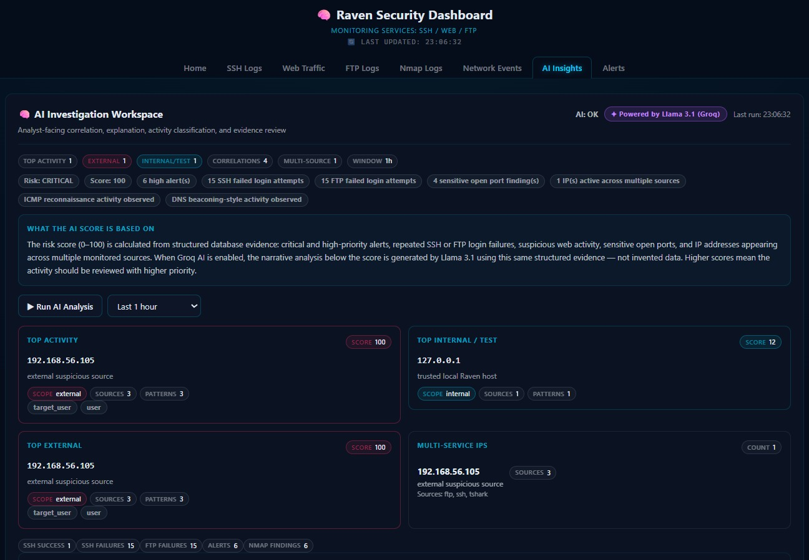
Raven was developed to demonstrate how a small cybersecurity lab can centralize multiple monitoring sources into one dashboard. Instead of manually checking separate SSH logs, FTP logs, Apache logs, packet captures, and port scan results, Raven collects the data, normalizes it, detects suspicious patterns, links evidence, and helps an analyst understand what happened.
Raven ingests real logs from Ubuntu services and real packet activity from the host-only lab network.
The system detects brute-force attempts, sensitive web path probing, suspicious packet bursts, and scan activity using explicit rules.
Alerts are linked to supporting rows in PostgreSQL, allowing the analyst to review the evidence behind each detection.
The platform is organized into four practical layers: collection, detection, AI/analytics, and analyst workflow. Each layer is implemented with simple, explainable components that can be demonstrated clearly.
ATTACKER / LAB TRAFFIC
Kali Linux 192.168.56.x
│
▼
COLLECTORS / AGENTS
extract_logs.py → SSH, FTP, Apache logs
tshark_collector.py → ICMP, DNS, TCP SYN, HTTP anomalies
scan_detector.py → live SYN scan detection
nmap_scanner.py → open-port baseline comparison
alerts_engine.py → detection, dedupe, evidence links
│
▼
POSTGRESQL 16
logs · ssh_events · ftp_events · nmap_findings
nmap_port_baseline · alerts · alert_log_links · agent_status
│
▼
FLASK API
/api/metrics · /api/alerts · /api/ssh_events
/api/ftp_logs · /api/web_logs · /api/nmap_findings
/api/ai/analyze · /api/ai/claude
│
▼
REACT DASHBOARD
Overview · SSH · FTP · Web · Nmap · Network Events · AI Insights · AlertsEvery feature below is aligned with the implementation: real logs, real packet capture, rule-based detection, Groq-powered AI narrative generation, and dashboard-based investigation.
Parses authentication events from auth logs, including login failures, successes, disconnects, usernames, IPs, and methods.
Tracks login failures, successful logins, uploads, downloads, deletes, renames, mkdir, and rmdir through structured FTP events.
Captures web requests and detects suspicious paths such as /admin, /login, /.env, /phpmyadmin, /phppgadmin, and config paths.
Stores only security-relevant anomalies: ICMP sweep, DNS burst, TCP SYN scan, and suspicious HTTP path probing.
Runs controlled Nmap scans against whitelisted local targets, stores open services, and alerts when a new port appears.
Generates alerts with cooldown, deduplication, status workflow, and evidence links across logs, SSH events, FTP events, and Nmap findings.
Profiles IP addresses across SSH, FTP, web, TShark, Nmap, and alerts to identify high-activity or multi-source sources.
Sends structured security evidence to Groq’s Llama 3.1 endpoint and returns a professional SOC-style narrative summary.
Provides pages for overview, SSH, web, FTP, Nmap, network events, AI Insights, and alert investigation.
Raven follows a clear security monitoring pipeline, keeping the logic explainable and evidence-driven.
Raven’s detection logic remains rule-based. The AI component does not detect attacks by itself and does not replace the analyst. It receives structured evidence from PostgreSQL, then Llama 3.1 hosted by Groq generates a concise SOC-style analysis.
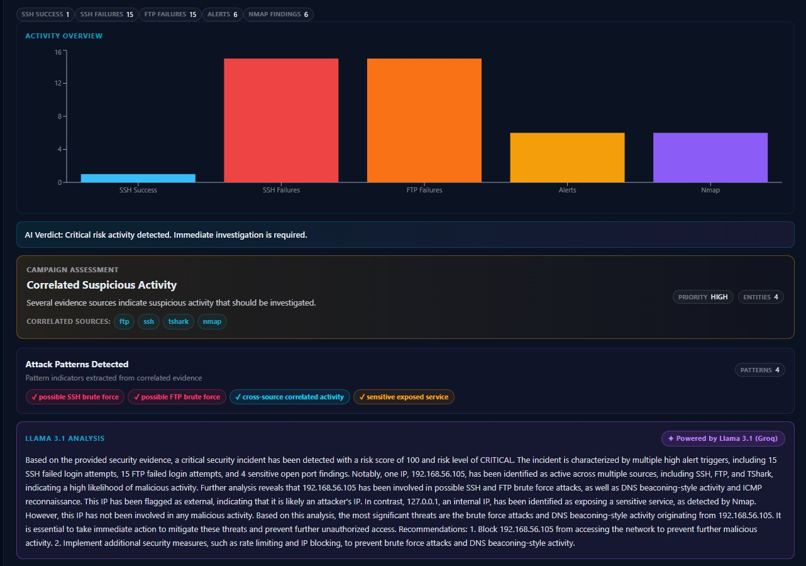
Risk score, correlated activity, campaign assessment, attack patterns, and Groq-powered Llama 3.1 analysis.
These screenshots show the actual React dashboard pages used to monitor events, inspect alerts, review network anomalies, and run AI-assisted analysis.
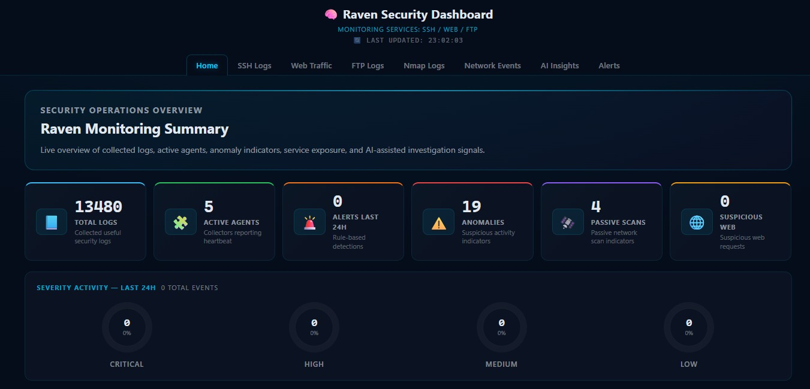
Live summary cards, severity activity rings, log volume chart, and agent status monitoring.
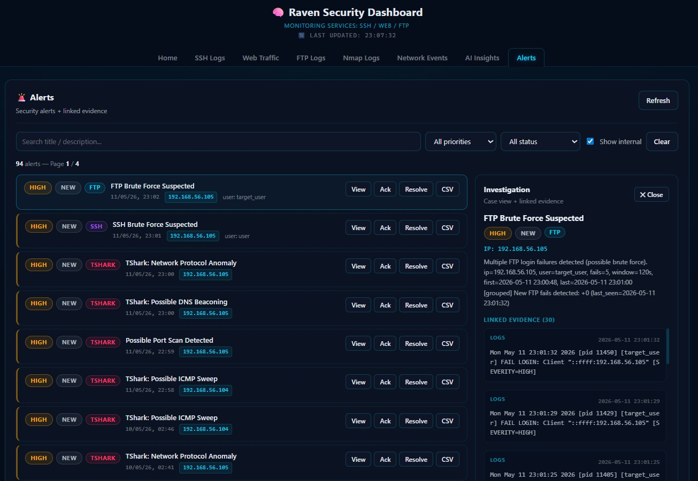
Evidence-linked alert panel with acknowledge, resolve, and CSV actions.
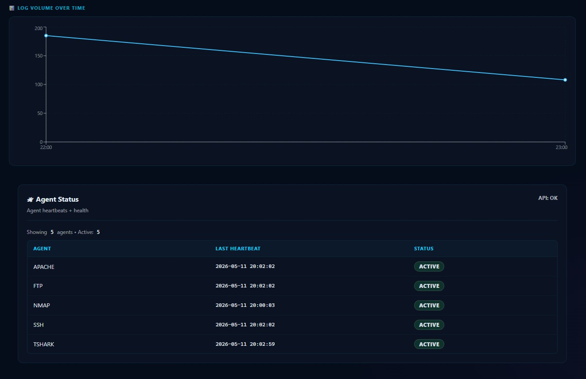
Heartbeat status for Apache, FTP, Nmap, SSH, and TShark.
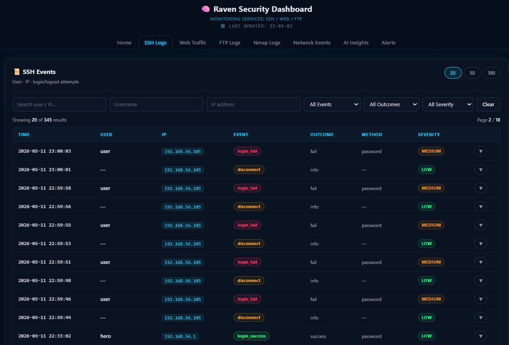
Authentication failures, successes, disconnects, source IPs, and severity badges.
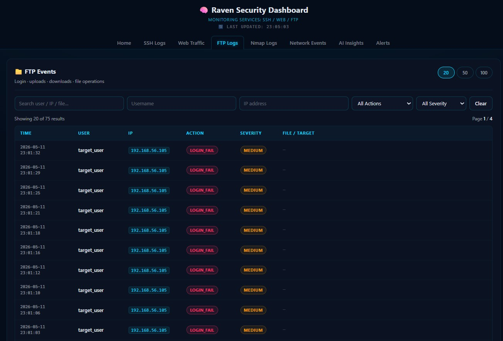
Login failures and file activity with action and severity filters.
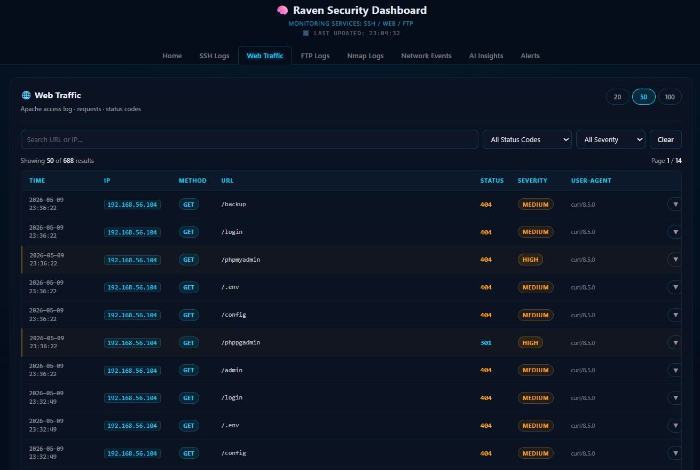
Apache requests, suspicious paths, status codes, and user-agent details.
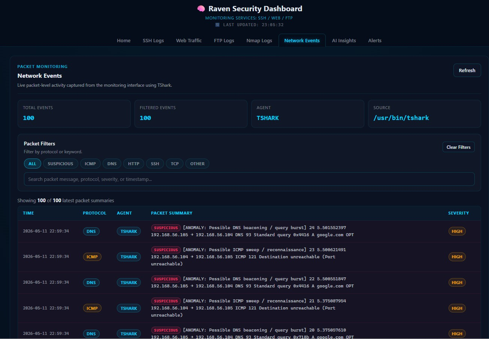
TShark anomalies including ICMP, DNS, TCP, and HTTP detections.
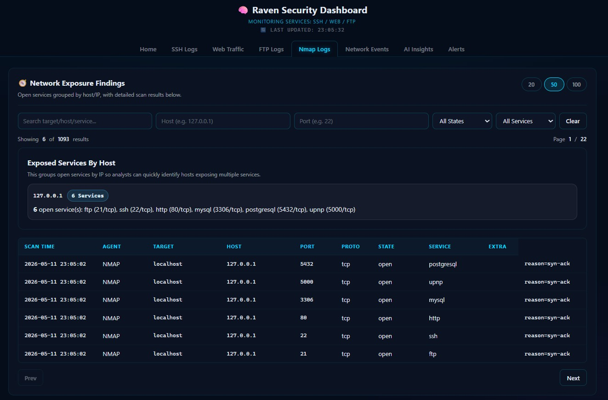
Open services grouped by host with port, protocol, state, and service data.
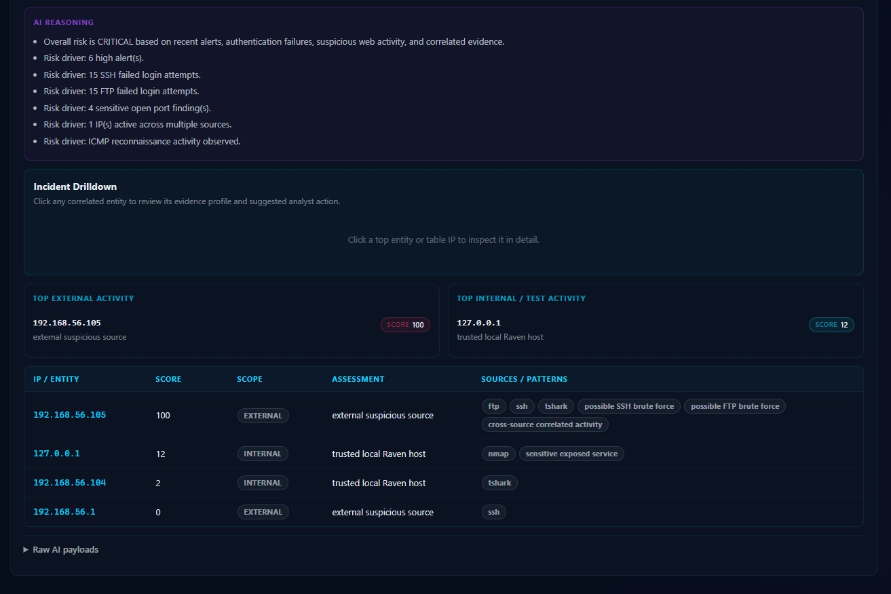
External and internal IP profiles with score, scope, assessment, sources, and patterns.
Raven was tested using an Ubuntu Raven VM and a Kali Linux attacker VM on a host-only network. The goal was not to claim universal attack coverage, but to prove the implemented pipeline works end-to-end.
| Scenario | Source | Detected By | Result |
|---|---|---|---|
| SSH brute-force attempts | Kali / internal testing | SSH parser + alerts engine | Validated |
| FTP brute-force attempts | Kali / FTP client | FTP parser + alerts engine | Validated |
| FTP file operations | vsftpd / FileZilla | FTP structured events | Validated |
| Sensitive web path probing | curl / browser | Apache logs + web rule | Validated |
| ICMP sweep | Kali ping burst | TShark anomaly detection | Validated |
| DNS query burst | Kali dig loop | TShark DNS anomaly | Validated |
| TCP SYN scan | Kali Nmap scan | TShark / scan detector | Validated |
| New open port detection | Local Nmap baseline change | Nmap scanner + baseline table | Validated |
| Multi-source suspicious activity | Combined lab attack sequence | AI correlation + alert context | Validated |
React 18 Recharts
Dashboard pages for metrics, logs, events, alerts, and AI investigation.
Python 3.12 Flask
REST API, alert workflows, export endpoints, and AI proxy route.
PostgreSQL 16
Central storage for logs, structured events, alerts, evidence links, and agent heartbeats.
TShark Nmap
Passive packet anomaly detection and active exposure monitoring.
Apache vsftpd SSH
Monitored services used for controlled lab testing.
Groq Llama 3.1
Generates analyst-style summaries from structured evidence.
These are future improvements, not current claims.
Move from one monitored VM to multiple remote collectors reporting to a central Raven instance.
Replace periodic polling with push-based updates for faster dashboard refresh.
Add IP reputation, ASN, geolocation, and public blacklist enrichment for suspicious sources.
Add user roles for analysts, administrators, and read-only viewers.
Package Flask, React, PostgreSQL, and collectors using Docker Compose.
Add anomaly detection as a supporting layer while keeping rule-based detections explainable.
Student ID: 202200767
Student ID: 202209467
Student ID: 202207174
Project Supervisor
Raven demonstrates a complete educational security monitoring workflow: real collection, structured parsing, rule-based detection, evidence-backed alerts, IP correlation, AI-assisted explanation, and dashboard-based investigation. It is intentionally scoped as a lab prototype, but the core idea is practical: help analysts see what happened, where it happened, how serious it is, and what evidence supports the alert.